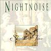

Celtic Lyrics Corner > Artists & Groups > Nightnoise > Shadow Of Time > The March Air
|  | The March Air |
| Credits : | Mícheál Ó Domhnaill |
| Appears On : | Shadow Of Time |
| Language : | Gàidhlig (Scottish Gaelic) |
| Other Versions : |
"
Chí Mi Na Mórbheanna
" on Talitha MacKenzie's album
Sólas
" Chi Mi Na Morbheanna " on Mouth Music's album Mouth Music |
| Lyrics : | English Translation : |
| O chì, chì mi na mórbheanna | I see, I see the big mountains |
| O chì, chì mi na córrbheanna | I see, I see the long mountains |
| O chì, chì mi na coireachan | I see, I see the corries |
| Chì mi na sgoran fo chèo | I see the steep hills under mist |
| Chì mi gun dàil an t-àite 's an d'rugadh mi | I see quickly the place of my birth |
| Cuirear orm fàilt' 's a' chànain a thuigeas mi | Welcoming me in the language I understand |
| Gheibh mi ann aoidh agus gràdh 'n uair ruigeam | I will receive a welcome and love when I get there |
| Nach reicinn air thunnaichean òir | That I wouldn't trade for tons of gold |